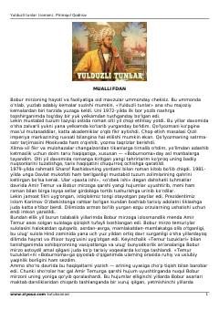

YTZahiriddin Muhammad Bobur hayoti va taqdiriga bag'ishlangan tarixiy roman.
Mazkur roman Zahiriddin Muhammad Boburning hayoti, taqdiri va murakkab tarixiy kurashlariga bag'ishlangan. Asarda temuriylar sulolasining taqdiri, Farg'ona vodiysidagi voqealar va Boburning shoh sifatida shakllanish jarayonlari ta'sirli hikoya qilinadi.